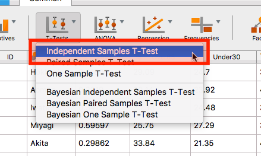
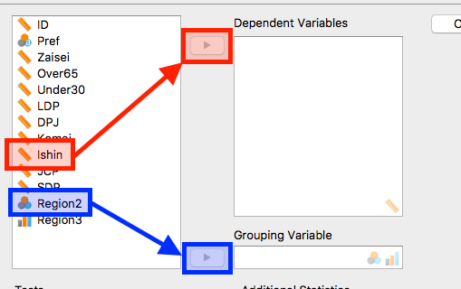
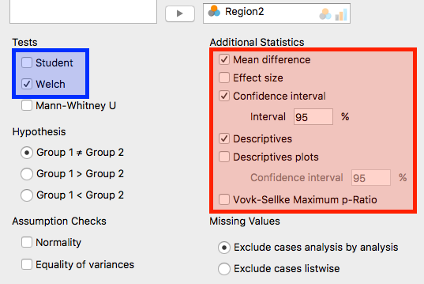
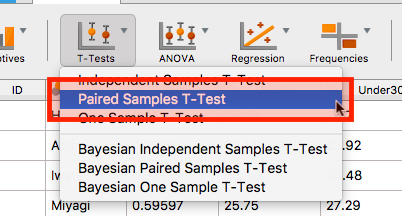
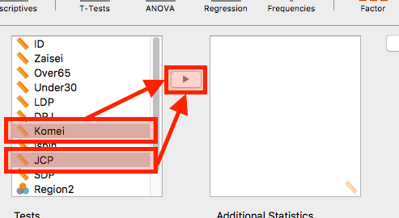
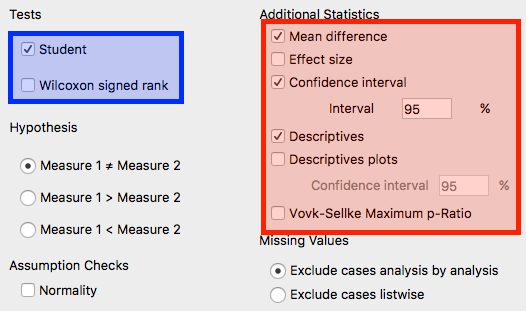

- 今回は2群の平均値の差に統計的に有意な差があるか否かを検定するt検定のやり方を紹介します。
独立したサンプルのt検定
- ここでは東日本と西日本における維新の得票率の差を検定してみましょう。
- ここでは「維新の得票率」変数 (
Ishin)を東/西日本変数 (Region2)変数で分割して平均値の差を比較する分析なので「独立サンプルのt検定」となります。 - まだはっきり理解できていない場合は色々とクリックしてみながら試行錯誤してみましょう。そのうちに慣れてきます。
- ここでは「維新の得票率」変数 (

- 分析メニューの「T-Test」から「Independent Samples T-Test」を選択します。

- まず、どの変数の差を見るかを決めるのが「Dependent Variables (従属変数)」になります。今回は維新の得票率の差を検定するので「
Ishin」変数を選択し、「▶」をクリックして従属変数リストへ入れます。 - 次は、維新の得票率変数をどのようにグループ分けするかを決めます。これが「Grouping Variable」です。今回は東日本/西日本に分けたいので、この二つの地域情報が格納されている「Region2」変数をクリックし、「▶」をクリックしてグループ化変数へ入れます。

- 選択項目がかなり多いですが、今回はできるかぎりSPSSの結果に近い結果が得られるようにします。
- 「Tests」は「Students」のチェックを外し、「Welch」にチェツクします。「Student」は等分散を仮定したt検定であり、「Welch」は等分散を仮定しないt検定です。私の講義では基本的に等分散を仮定しない分析結果を採用すると申し上げましたね。したがって、「Welch」にチェックを入れます。むろん、他の項目にチェックを入れても結果が変わることはありませんので、試してみてください。
- 「Additional Statistics」は分析結果をより楽に解釈できるような情報を提供してくれます。
- 「Mean Difference」: 二つのグループの平均値の差を表示します。この場合、東/西日本における維新の得票率の差ですね。
- 「Confidential Interval」: 本講義では説明しませんでしたが、95%信頼区間です。教科書や講義によっては「この区間内に真の差分が含まれる確率は95%です！」と説明されますが、ウソです。注意してください。具体的な意味に関してはネットを調べてみましょう。
- 「Descriptive Statistics」: 記述統計です。維新の得票率の記述統計を東日本/西日本に分けて表示してくれるので便利です。

- 分析結果です。下段の「Descriptives」は記述統計なので説明は省きます。ここでは上段の「t」、「df」、「p」、「Mean Difference」について説明します。
- t: t統計量です。具体的な説明は省きますが、レポート・論文なので結果を報告する際には必ず必要です。
- df: 自由度です。これも報告の際には必要になる項目です。
- p: 有意確率 (p値)です。今回は0.033ですね。一般的に有意水準 (α)は0.05であり、この結果はp値がαより小さいので帰無仮説は棄却されます。つまり、「東日本と西日本の維新の得票率には統計的に有意な差がある (95%水準で差がある)。」と解釈できます。
- Mean Difference: 平均値の差分です。この場合は「東日本における維新の得票率 – 西日本における維新の得票率」となります。つまり、西日本が3.370%ポイント高いという意味です。
対応サンプルのt検定
- 今回は公明党と共産党の得票率に統計的に有意な差があるか否かを検定してみましょう。

- 分析メニューの「T-Tests」の「Paired Samples T-Test」を選択します。

- 比較する二つの変数を右のリストへ投入します。今回は公明党と共産党の得票率を比較するので、「
Komei」変数と「JCP」変数を選択し、「▶」をクリックして右のリストへ移動させます。

- 独立サンプルのt検定と似たような画面ですね。右の「Additional Statistics」は先ほどの画面と同一なので説明は省略します。ここで異なるのは「Tests」の方です（下段のAssumption Checksにも等分散検定の項目がなくなりました）。
- ここでは「Student」一択です。「Wilcoxonの符号順位検定 (signed rank)」についてはネットで調べてみましょう。

- 以上が分析結果です。結果の読み方は独立サンプルのt検定と同じです。
- この場合、有意確率 (p値)が0.001未満であり、一般的な有意水準 (α = 0.05)より小さいので帰無仮説は棄却されます。つまり、「公明党と共産党の得票率には統計的に有意な差がある (95%水準で差がある)。」と解釈できます。また、「Mean Difference」は4.150であり、公明党の方が高いので「公明党の得票率は共産党より統計的に有意に高い (95%水準で高い)。」とも言えるでしょうね。